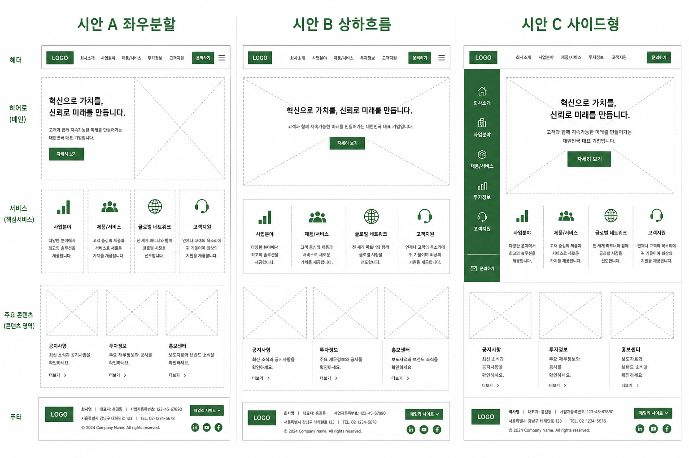

전체 톤(공식·초록)은 유지하고, 레퍼런스(sjasset)와 비슷한 구조만 바꾼 3가지안입니다. 아래에서 한눈에 비교한 뒤, 각 시안을 클릭해 상세 배치를 확인하세요.

| 시안 | 배치 특징 | 추천 상황 |
|---|---|---|
| A · 좌우 분할 | 슬로건 좌 / 사진 우 · 사업 2×3 그리드 · 실적+공지 좌 / 문의+전화 우 | 레퍼런스 겹침 최소 + 공식感 |
| B · 상하 흐름 | 짧은 배너 · 텍스트 탭 사업 · 실적 전폭 · 하단 3열 | 위→아래 읽기 쉬운 구조 |
| C · 사이드형 | 좌측 연락 패널 고정 · 우측 사업 세로 리스트 · 실적 가로 카드 | 문의·전화 강조 B2B형 |
| 현재 구현 | 풀폭 비주얼 · 5칸 사업박스 · 3단(실적|바로가기|공지+TEL) | sjasset과 구조 유사 (비교용) |